Requisitos:
Requisitos mínimos para PC:
Sistema Operativo: Windows 7 de 64 bits.
CPU: Intel Core i3-6300 3,8 GHz/AMD FX-4350 4,2 GHz con procesador de 4 núcleos
RAM: 6 GB
GPU: NVIDIA GeForce GT 640/Radeon HD 7730
RAM de GPU: 1 GB
Disco Duro: al menos 22 GB de espacio libre.
Instalación del juego:
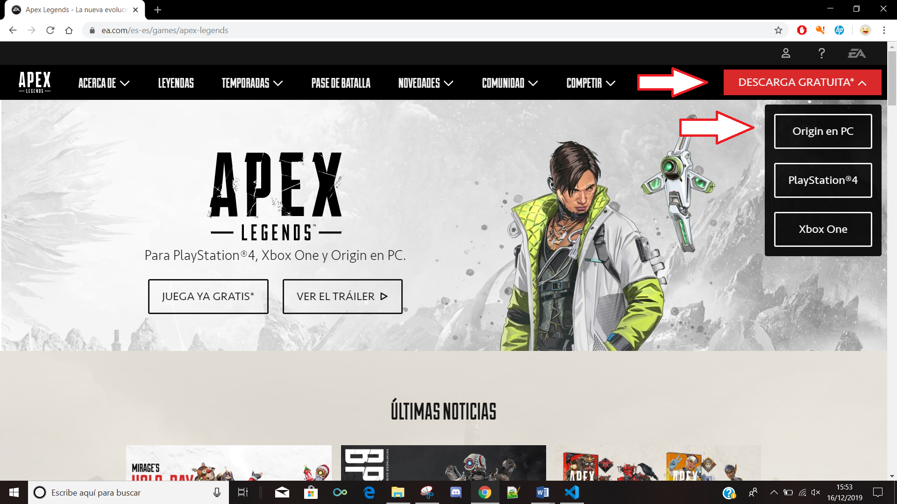Dandole a descarga gratuita y luego en la plataforma que queramos descargar el juego podremos descargarlo, en el caso que le demos a Ps4 o Xbox saltara la tienda web de dicha plataforma.
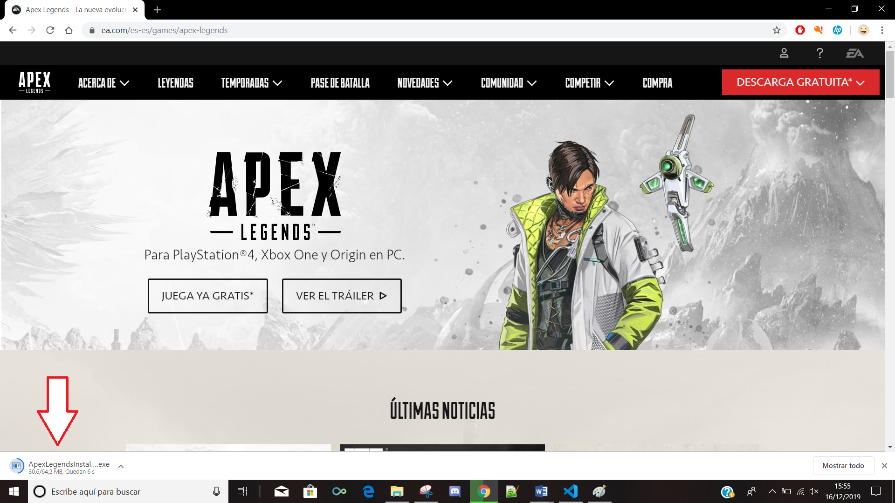Al darle a Origin en PC nos empezara a descargar el instal·lador del juego.
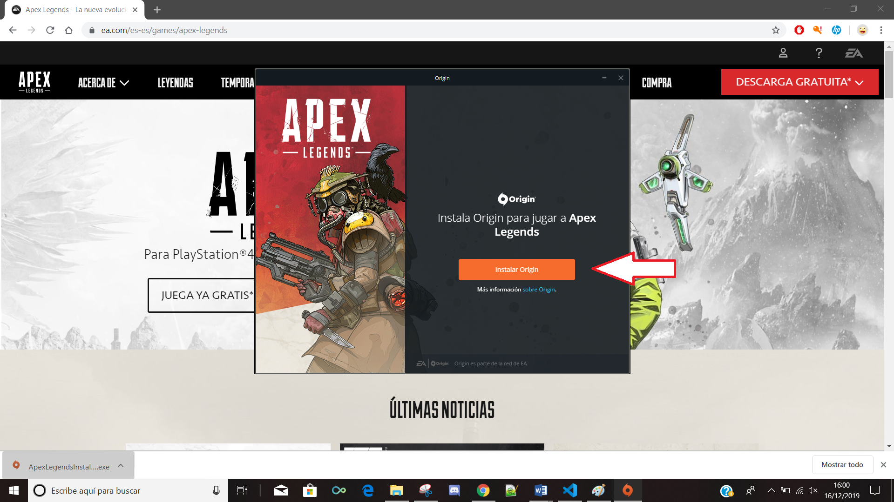Al finalizar la descarga y abrirlo, se abrira el instal·lador.
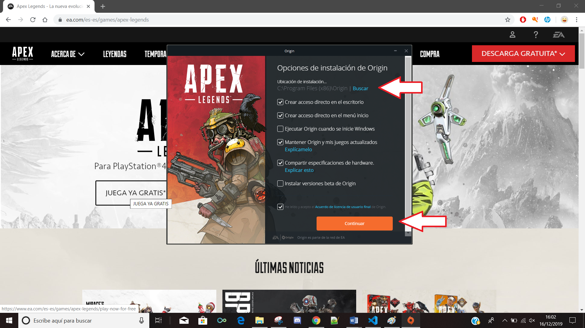Aqui le podemos poner en un sitio especifico para que se descarge en ese lugar.
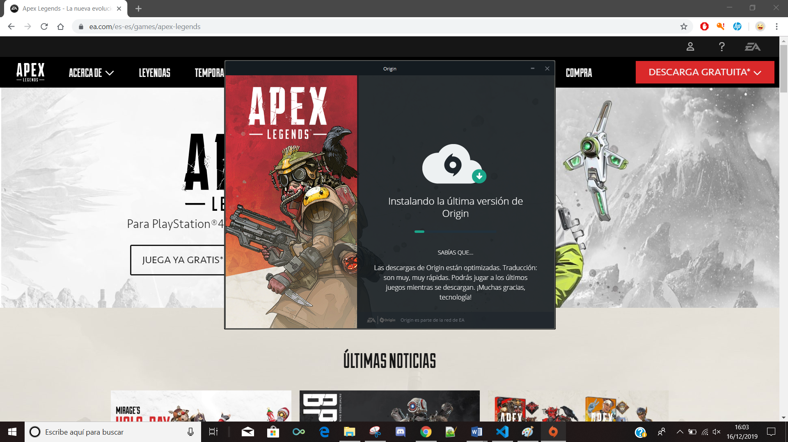Empezara con la instalación de Origin.
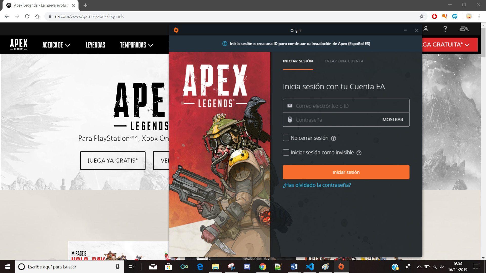Creamos una cuenta o iniciamos sesion con la que tengamos.
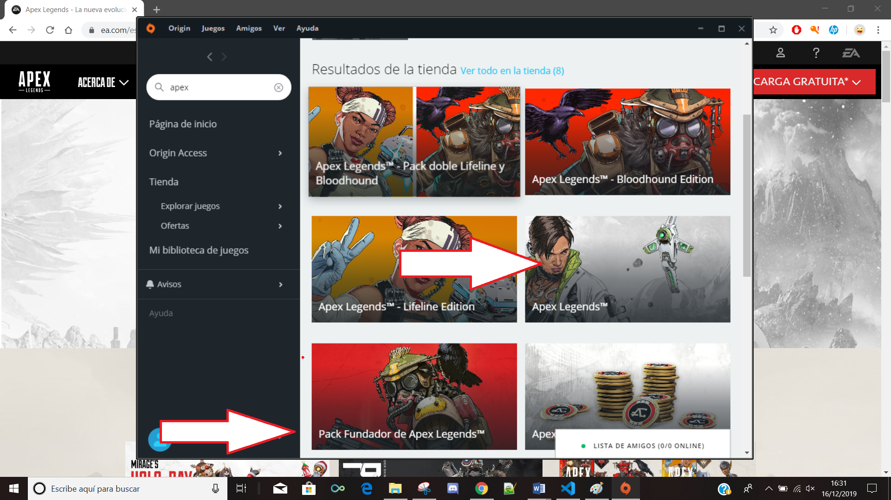Buscamos "Apex" en el buscador y nos saldra diferentes nosotros queremos el gratuito, los otros son packs con contneido como skins o cosas por el estilo.
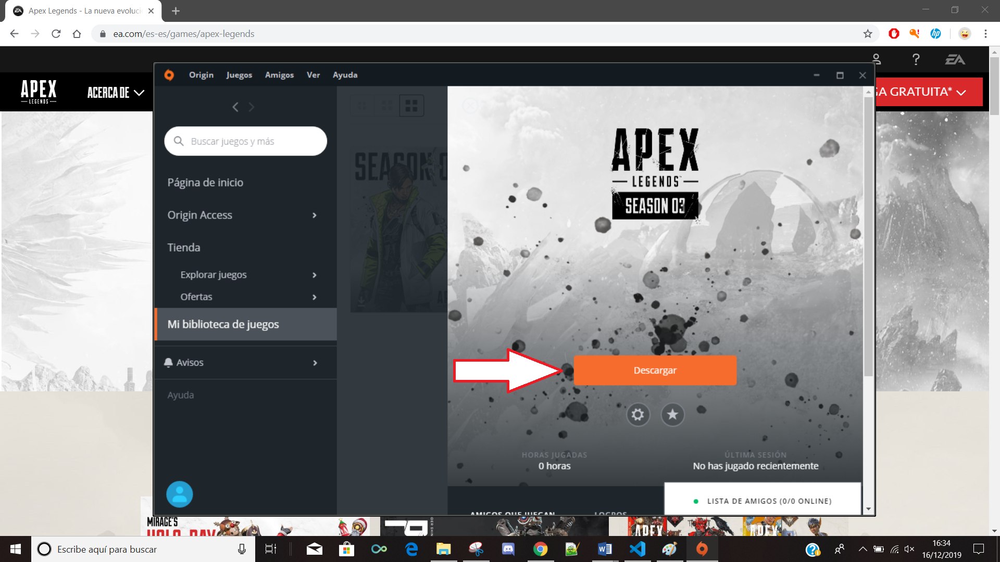Iniciamos la descarga.
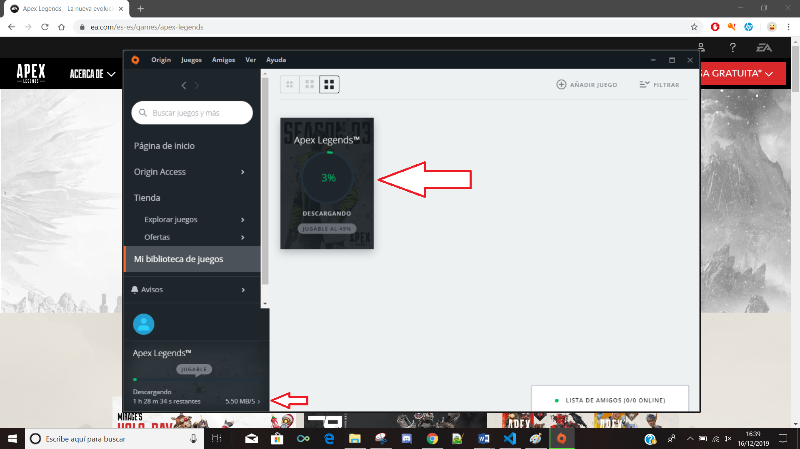Aqui s epuede observar el tiempo que se estima y el % que lleva la descarga.
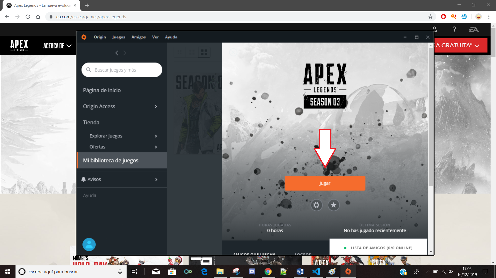Una vez descargado, le daremos a jugar.
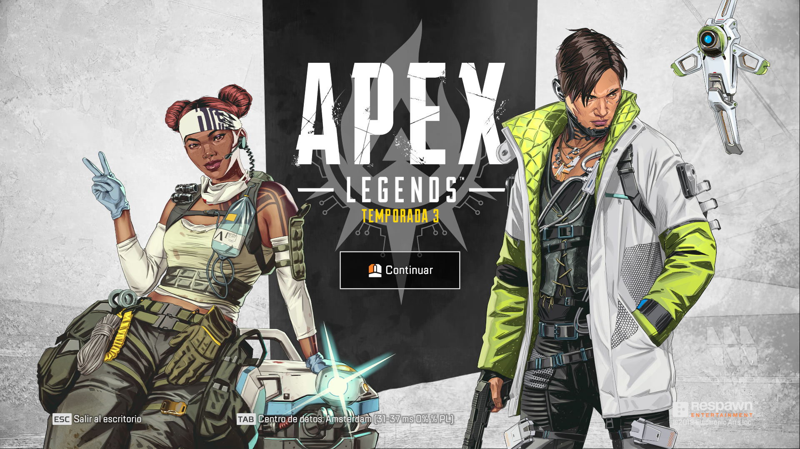Se abrirá el juego.
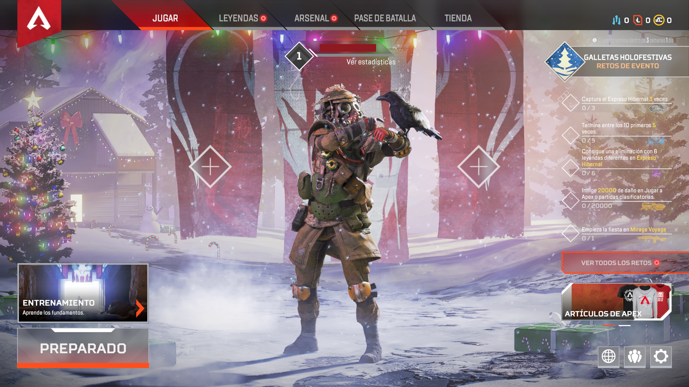Y aqui ya podremos empezar a jugar, si le damos a "Preparado" iremos a un tutorial.

Este es el tutorial del juego, donde te explica lo basico y los controles.